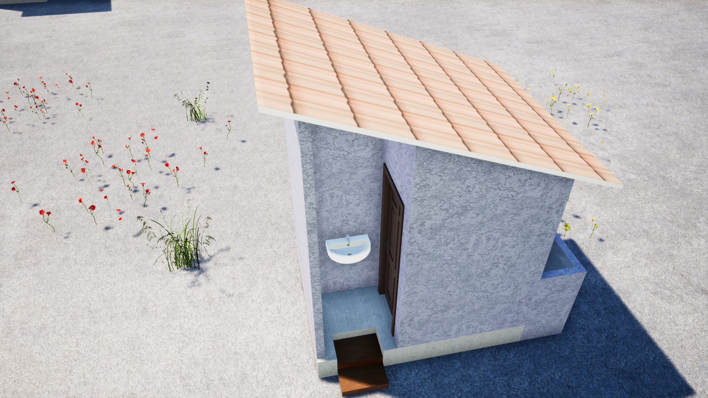
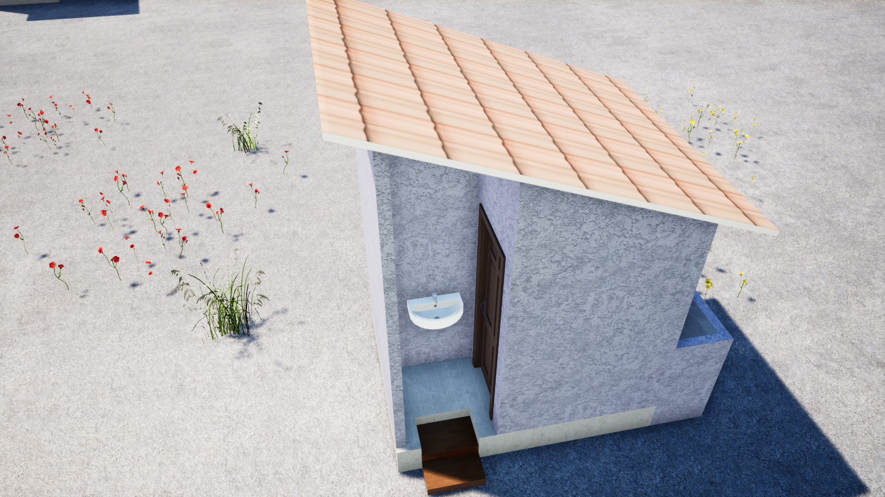

Progetti
Acqua
Paese/area territoriale / città dove viene realizzato il progetto
Il progetto qui presentato vuole contribuire al raggiungimento degli obiettivi per lo sviluppo sostenibile SDGs, con la fornitura dell’acqua, obiettivo 6, nel villaggio rurale di ALFACOPE- GAOUGBLE. ALFACOPE-GAOUGBLE è uno dei 12 villaggi più popolati del comune di NYAMASSILA che si trova nella regione des Plateaux. Dista di circa 248 km dalla capitale del Togo, Lomé.
Il progetto si inserisce nel programma di sviluppo locale del villaggio bersaglio, sviluppato dallo chef tradizionale coadiuvato da un comitato locale. Località poverissima, priva di acqua potabile, né di corrente elettrica, l’unica scuola è insufficiente per accogliere tutti i bambini in età scolare, le case sono di fango e paglia. Le famiglie vivono in estrema precarietà e povertà. L'economia del villaggio è essenzialmente basata sul settore primario con predominanza dell'agricoltura. L'agricoltura è di sussistenza e questo permette alla popolazione di fare fronte ai fabbisogni necessari per la sopravvivenza.
L’acqua rappresenta la vera emergenza del villaggio sia per uso personale che per uso agricolo. Il villaggio di ALFACOPE-GAOUGBLE non ha accesso alle fonti di acqua potabile e questo fa sì che gli abitanti bevono l'acqua stagnante. Nonostante le sollecitazioni, da parte del comitato locale all’amministrazione della comune di NYAMASSILA, non sono mai arrivate le risorse per costruire le fonti di acqua potabile necessari per la popolazione. Uno dei motivi per cui i ragazzi non vanno a scuola è che il loro compito primario è di andare ad attingere dell’acqua potabile, anche ad una distanza che varia da 5 a 15 km da percorrere ogni giorno con 20 a 30 litri di secchio sulla testa.
Ultimo ma non meno importante, il villaggio è sprovvisto di servizi igienici, anche la scuola primaria del villaggio con 936 alunni è senza bagno né acqua potabile e questo genera pessime condizioni igienico sanitarie.
Per queste ragioni la nostra associazione, in accordo e con la partecipazione del comitato del villaggio e il comune di NYAMASSILA, vuole contribuire alla realizzazione di una fonte di acqua potabile e dei servizi igienici per migliorare le condizioni di vita e di salute della popolazione locale.


 
